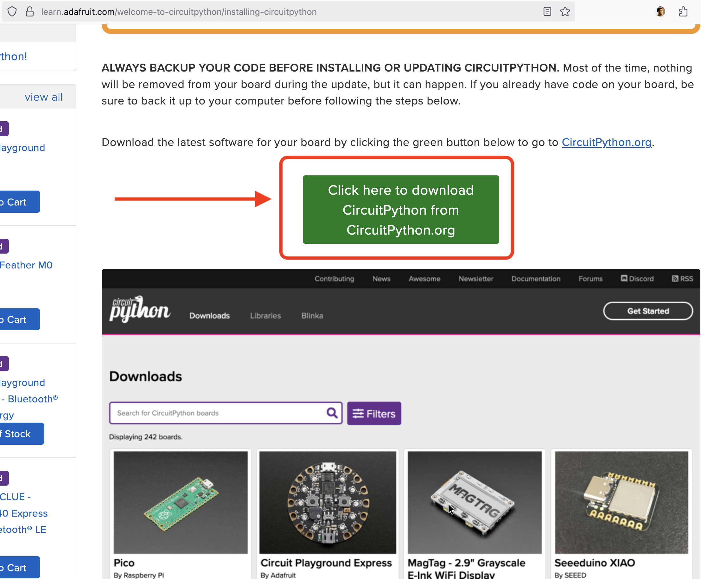
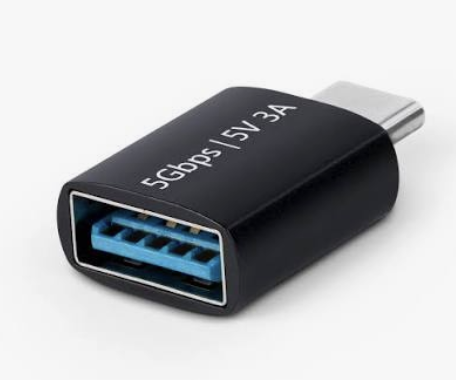
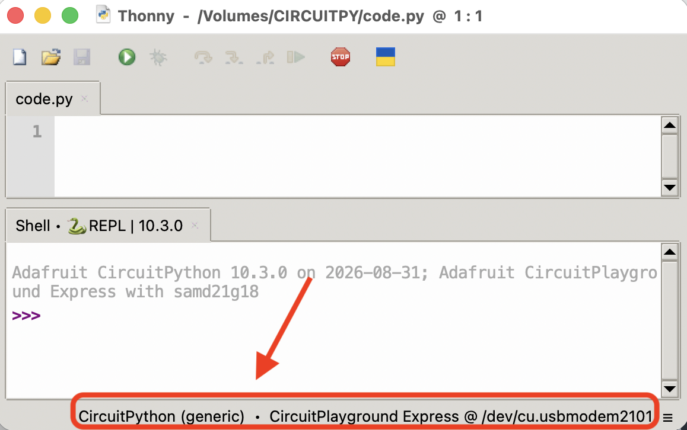
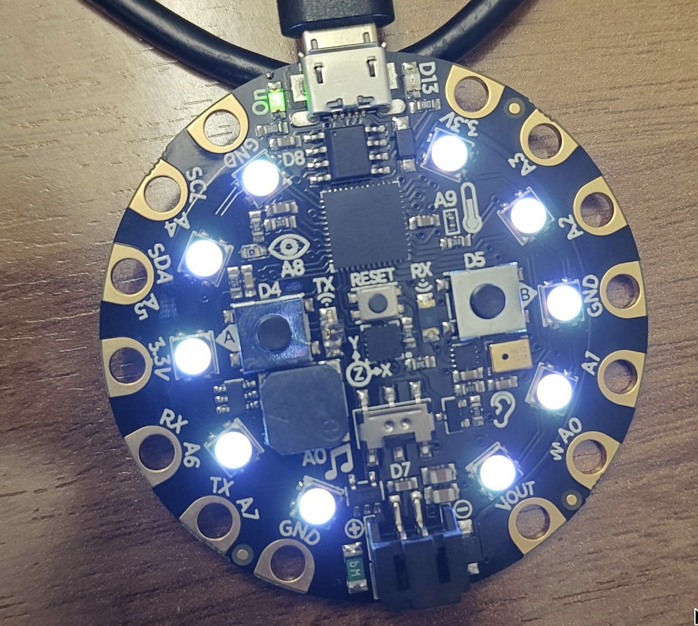
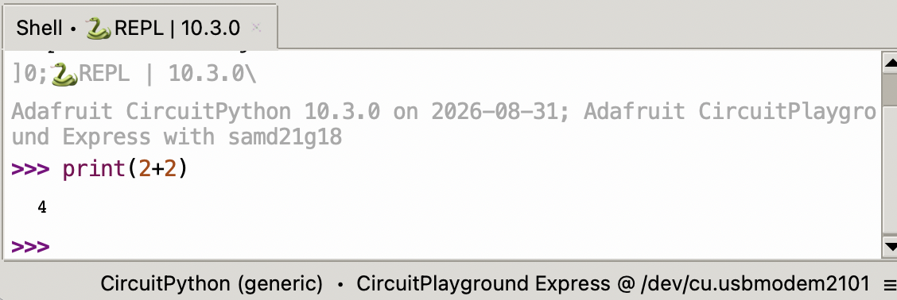
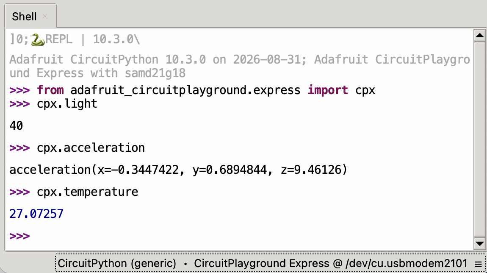
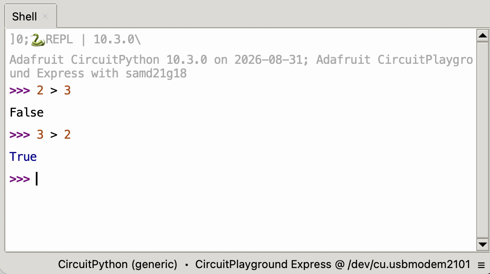
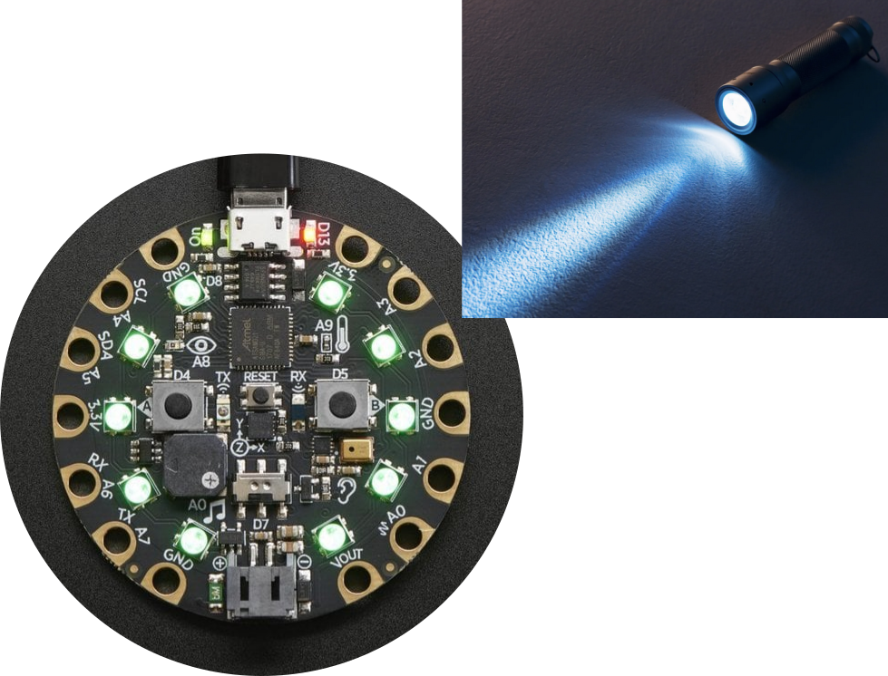
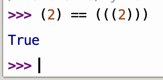

Lecture 02
E21 Computer Engineering Fundamentals
Lab Section Assignments
See Google Sheet sent out by Prof. Zucker!
Materials you should have



* Drag-and-drop UF2 file onto CPLAYBOOT drive; if you see CIRCUITPY as an external drive, you have succeeded. Find instructions on Lecture 1 page.
Also:

Integrated Development Environment (IDE)
- A ‘development environment’ is the program (or programs) you use to write code.
- It’s possible to simply use Notepad as your Development Environment, but that’s kinda lame
- Some options
- VS Code (v. popular among Swat students)
- A simple text editor with syntax highlighting (e.g. Sublime Text)
- Thonny, Mu, other ‘lightweight IDEs’
- IDLE (official Python IDE)
Two ways to run code on your board

code.py on board the file
- Once you’re sure what you want to code
- Thoughtful, long-form coding
- Runs if and when you save
code.py - Persistent
- Trying things out
- Instant feedback if works
- Runs when you hit enter
- No memory
Let’s start with the CPX in interactive mode
- Disconnect and reconnect CPX.
- Open Thonny Code Editor. You should see “CircuitPython (generic)” here.

- Click
 . You should now see white lights
. You should now see white lights 
Using your Circuit Playground Express
The CPX can do some things without loading any libraries. e.g., try:

This uses the computer on board the CPX to calculate 2+2.
Unlike MATLAB, semicolons are irrelevant. Don’t use them!
The Adafruit Library
The CPX comes with a library of programs to control it, but you have to load it. Enter:
from adafruit_circuitplayground.express import cpxFind the documentation for this library here.
Much of the code we use is shared between the ‘express’ and ‘non-express’ versions. You can often do
from adafruit_circuitplayground import cpinstead of
from adafruit_circuitplayground.express import cpxKeep this snippet of code handy if you’re slow to type; you’ll have to copy-and-paste it many times!
Reading Sensors on the CPX
- Light Sensor:
cpx.light - Acceleration:
cpx.acceleration - Temperature:
cpx.temperature - Touch sensors:
cpx.touch_A4,cpx.touch_A3etc.

Output with the CPX
Play a tone at x Hertz for y seconds:
cpx.play_tone(x,y)Light up pixel number N with a light made up of Red, Green, and Blue elements:
cpx.pixels[4] = (30,100,20)This will produce light on pixel number 4 with the following components:
Red: 30, Green: 100, Blue: 20
Python preliminaries
- Like MATLAB, Python is an interpreted language.
- by contrast, C is a ‘compiled’ language
- Unlike MATLAB, indentation matters!
Assigning a value to a variable in Python occurs with =. Thus a = 5 takes the value 5 and assigns it to the variable named a.
Conditionals
A conditional is a statement that evaluates to True or False.

>: Greater than<: Less than==: Equal to!=: Not equal to>=: Greater than or equal to<=: Less than or equal to
Trying out conditional operators on CPX
Try the following code:
cpx.light > 100
Next, try this with a cell phone flashlight shining on the CPX.

Practice with conditionals
Try the following lines of code inside Thonny Code Editor in interactive mode.
>>> True == 'True'
>>> 3 == ‘3’
>>> None == 0
>>> None == None
>>> 0.1 + 0.2 == 0.3
>>> 1 == 0.9999
>>> 1 == 0.999999…
>>> (3 + 2j) > (2 + 1j)
>>> [] == []
>>> ‘’ == ‘’
>>> [] == ‘’
>>> [1,2] < [3,4,5]
>>> True == 1
>>> False == 0
>>> (3 > 2) != (5 < 4)
>>> 1.0 == 1Variable Types: Boolean
A conditional statement of the form
cpx.light > 100checks whether the variablecpx.lightis more than100and returns an answer: True or FalseThis is a special type of variable called a Boolean
are either True or False. There are no maybe’s!
- Some examples of Boolean variables:
True(without quotes)False(without quotes)(2 > 3)with or without parantheses(cpx.light < 100)
Logical Operations on conditionals
Python has two main binary logical operators that operate on two Boolean variables on either side:
x and ya or b
There is also a logical operator that operates on only one Boolean variable:
not c
Try the following code line by line:
x = True
y = False
z = True
Then try using and, or and not on the three variables x, y and z and observe the results.
Truth Tables for binary logical operators
for the and operator
Variable A |
Variable B |
Result of A and B |
|---|---|---|
True |
True |
True |
True |
False |
False |
False |
True |
False |
False |
False |
False |
for the or operator
Variable A |
Variable B |
Result of A or B |
|---|---|---|
True |
True |
True |
True |
False |
True |
False |
True |
True |
False |
False |
False |
Common variable types in Python
| Type | Name | Purpose |
|---|---|---|
| String | str |
String of text |
| Integer | int |
Whole numbers |
| Floating-point numbers | float |
Decimals |
| Boolean | bool |
Truth value |
| List | list |
Ordered list of variables |
| Tuple | tuple |
Un-alterable list |
| Range | range |
A sequence of numbers |
Check the type of a variable x using type(x)
Parantheses around a single variable don’t do anything.

Numbers in Python: float and int
- In Python, it is important to distinguish between
ints andfloats. - In MATLAB, numbers default to being floating-point.
We will get to this later in E21!
int is a whole number.
float is a decimal number.
>>> a = 5 # this is an int
>>> a = 5.0 # this is a float
>>> type(6)
<class 'int'>
>>> type(6.0)
<class 'float'>The list and tuple types
Lists and tuples in Python are zero-indexed.
Lists can be modified.
Tuples, once set, cannot be changed.
>>> a = [1,3,5,7,10]
>>> type(a)
<class ‘list’>
>>> a[0]
1
>>> a[3]
7
>>> b = [4, 2.4, 2+4j]
>>> type(b[0])
<class ‘int’>
>>> type(b[1])
<class ‘float’>
>>> type(b[2])
<class ‘complex’>
>>> s = (3,4,5)
>>> s[1]
4The range type
Refers to a range of whole numbers.
You can access different elements of a range the same way you would access elements of a list.
Your computer saves memory if you use range instead of list.
>>> a = [1,3,5,7,9,11,13]
>>> b = range(1,13,2)
>>> a[3]
7
>>> b[3]
7
>>> c = range(13)
>>> c[9]
9
>>> d = range(5,13)
>>> d[0]
5
>>> d[7]
12| Usage | Code |
|---|---|
From 0 to N-1 |
range(N) |
From a to b-1 |
range(a,b) |
From a to b in steps of c but excluding b |
range(a,b,c) |
While Loops
- A
whileloop makes code run for ever… while the loop’s condition isTrue - In words: “While condition is true, keep doing thing”
# This program makes the Circuit Playground Express
# play middle A (440 Hz) and then a higher note (880 Hz)
# until you touch pin A4. Then, it plays a low note once.
while not cpx.touch_A4:
cpx.play_tone(440,1)
cpx.play_tone(880,0.5)
cpx.play_tone(220,1)- Some things to notice about while loops:
- What happens when the condition is not true?
- Indentation and colon symbol
- Check if the condition is true. If yes:
- Execute
cpx.play_tone(440,1) - Execute
px.play_tone(880,0.5) - Check if the condition is (still) true:
- If yes: return to step 2.
- If no: exit the loop
You can indent as much as you want
But be consistent.
while True:
cpx.play_tone(440,1)
cpx.play_tone(880,0.5)
while True:
cpx.play_tone(440,1)
cpx.play_tone(880,0.5)
while True:
cpx.play_tone(440,1)
cpx.play_tone(880,0.5)You can nest one while loop inside the other
Nested Loops
while not cpx.touch_A4:
cpx.play_tone(440,1)
while True:
cpx.play_tone(220,1)Two loops at the same indentation level are not nested:
while not cpx.touch_A4:
cpx.play_tone(440,1)
while True:
cpx.play_tone(220,1)